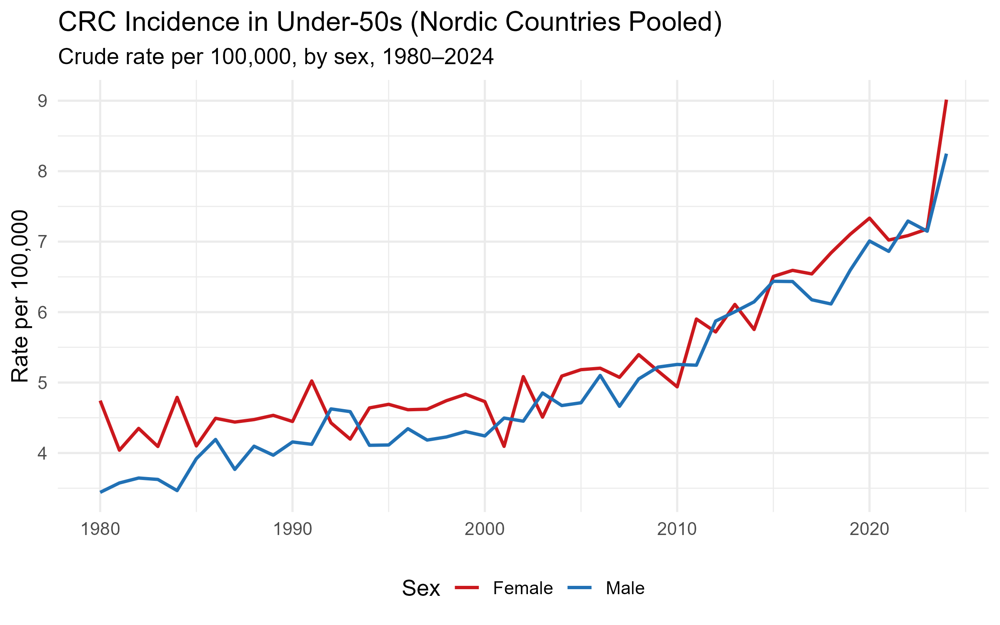
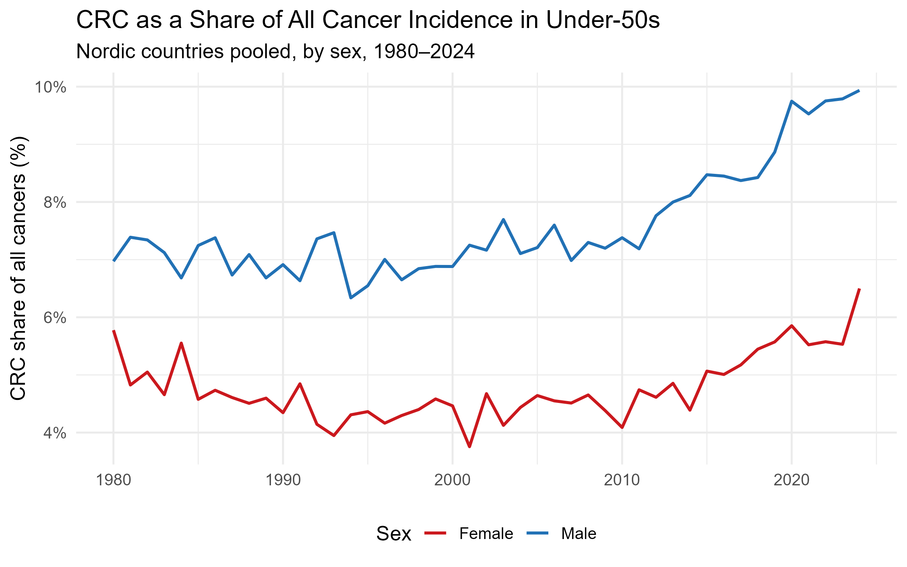
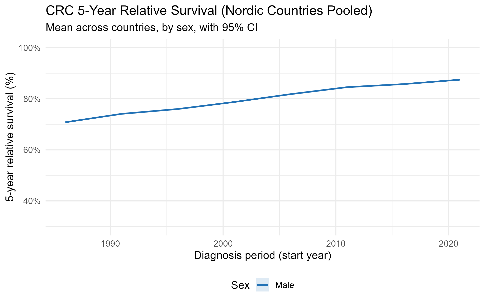
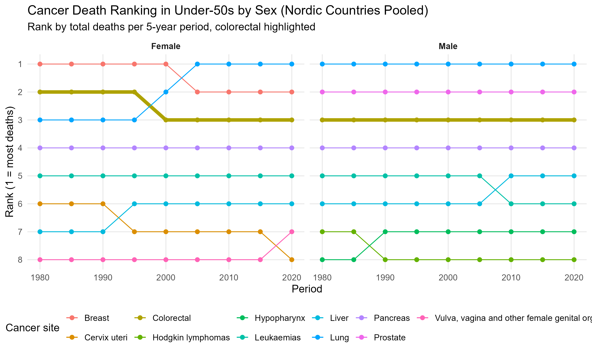

In March 2026, The Guardian reported that colorectal cancer had overtaken all other cancers as the leading cause of cancer death among Americans under 50. That is a striking headline, and it raises a natural question for those of us working with Nordic registry data: is the same pattern playing out here?
We pulled 44 years of cancer registry data from NORDCAN, pooling across Denmark, Finland, Iceland, Norway, and Sweden from 1980 to 2024 using the nordcanr R package. The answer is nuanced. The trend is unmistakable, but the ranking headline does not translate directly.

CRC incidence in under-50s has risen steeply in both men and women. In males, rates climbed from 3.4 to 8.2 per 100,000, a 140% increase. In females, rates went from 4.7 to 9.0 per 100,000, a 90% increase. Women have had higher absolute rates throughout the period, but the male trajectory is steeper and accelerating faster, especially in the last decade. Neither trend shows any sign of plateauing. This rise predates organised screening programmes by decades: most Nordic countries did not introduce population-based CRC screening until the 2010s, and those programmes target ages 50 and above.
A natural follow-up: is CRC simply rising in step with cancer incidence overall, or is it growing disproportionately fast?

For young men, CRC is not just becoming more common; it is taking up an increasing share of the cancer burden. A shift from 7% to 10% of all cancer diagnoses means CRC is outpacing cancer incidence in general. For women, the share has barely moved, suggesting CRC incidence is rising roughly in line with the overall trend. This sex difference is one of the more notable features of the data: whatever is driving the rise is acting disproportionately on young men.
Despite the rising incidence, outcomes are improving. Five-year relative survival for CRC across the Nordic countries has climbed from approximately 71% in the mid-1980s to 88% today (based on available NORDCAN data for males; female survival data were not returned by the API for this query). Better surgical techniques, targeted therapies, and earlier symptomatic detection have all contributed. But improving survival does not fully offset the concern. A cancer that is becoming more common in working-age adults carries consequences that survival curves alone do not capture: years of life lost, treatment burden during peak productive years, and the long-term effects of chemotherapy in younger patients.

So is CRC really the leading cancer killer in young Nordic adults, as it now is in the US?

No. In the Nordic countries, CRC ranks #3 among cancer deaths in under-50s for both sexes and has held that position remarkably consistently since 1980. In men, brain tumours and leukaemia claim the top two spots. In women, breast cancer dominates the first position by a wide margin. The Guardian headline reflects a US-specific ranking that does not directly map to the Nordic picture, likely driven by differences in screening uptake, dietary patterns, and the relative burden of other cancers across the two populations.
What the Nordic data does confirm is the direction. CRC incidence in younger adults is rising, has been rising for over four decades, and is accelerating. The share of all cancers attributable to CRC is growing, particularly in young men. These are not features of a stable epidemiological landscape. Whether CRC eventually climbs to #1 in the Nordics is less important than the fact that it is moving in that direction in a population that historically had very low rates, and in which screening programmes offer no protection.
Reproducible code (R)
library(jsonlite); library(dplyr); library(ggplot2); library(scales)
# Source the nordcanr package functions
for (f in list.files("R", pattern = "\\.R$", full.names = TRUE)) source(f)
countries <- c(208L, 246L, 352L, 578L, 752L) # DK, FI, IS, NO, SE
# Pull CRC + all-site incidence by sex
crc_inc <- bind_rows(
nc_incidence(520L, "male", countries, 1980L, 2024L) |> mutate(sex_label="Male"),
nc_incidence(520L, "female", countries, 1980L, 2024L) |> mutate(sex_label="Female"))
all_inc <- bind_rows(
nc_incidence(980L, "male", countries, 1980L, 2024L) |> mutate(sex_label="Male"),
nc_incidence(980L, "female", countries, 1980L, 2024L) |> mutate(sex_label="Female"))
# Pool across countries and filter to under-50
pool <- function(d) d |>
group_by(year, sex_label, band, label, age_low, age_high) |>
summarise(count=sum(count,na.rm=T), pop=sum(pop,na.rm=T), .groups="drop") |>
mutate(rate = count/pop*1e5)
u50 <- pool(crc_inc) |> filter(age_high <= 49) |>
group_by(year, sex_label) |>
summarise(crc=sum(count), pop=sum(pop), .groups="drop")
# CRC share of all cancers
u50_all <- pool(all_inc) |> filter(age_high <= 49) |>
group_by(year, sex_label) |>
summarise(all=sum(count), .groups="drop")
inner_join(u50, u50_all, by=c("year","sex_label")) |>
mutate(share = crc/all) |>
ggplot(aes(year, share, colour=sex_label)) + geom_line(linewidth=0.9) +
scale_y_continuous(labels=percent_format(scale=100))Full script: analysis.R on GitHub